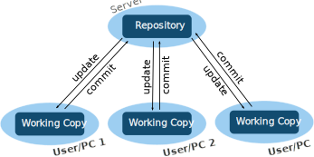
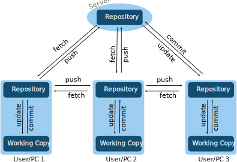

What is Git
Git is a distributed version control system for tracking changes in source code
Free and Open Source
Very popular due in part to the popularity of Github
Central vs. Distributed
Centralized
CVS, SVN
Distributed
Git, Mercurial, Fossil
Git Workflow

Git Branches

How git stores files
Most important to note that git stores snapshots not deltas
Makes git unsuitable for large binary files
Git Commands: Basic usage
Git Commands: git init
We can make any folder into a git repository, we just run the initialize command
$ git init # make a git repo
This will create a .git/ folder that stores the repository,
doing so lets us use all the features of git for that folder.
Git Commands: git status
The git status command will let
us check the current status of the repository, whether things have
changed, if we have staged changes, what branch we are on, etc...
$ git status
Important things to take note of are untracked files, modified files, and staged files (files to be committed).
Git Commands: git add
When we want to stage files for a commit we use the command git add
We can create an empty file
$ touch README
Then add it to our empty repository
$ git add README
Git Commands: git commit
To save our changes in the staged state we need to commit them to
the repository with git commit
$ git commit
This will open our default text editor defined by
$EDITOR or $VISUAL environment variables
In this file we write our commit message and save and close the file for the commit to happen.
Git Commands: git log
We can view the history with
git log command
$ git log
commit 2cfd7c59bf4fcf9ed0d4d198c1f81903fc47ea63 (HEAD -> master, origin/master, origin/HEAD)
Author: Weston Ortiz
Date: Tue Jul 21 13:07:30 2020 -0600
Add Saramito model to stress_developed, fix Jacobians, add some Saramito Post Procs (#304)
The commit hash has an important roll of being a unique identifier for a commit.
Git Commands: git diff
To see what changes we have made to the current state of the repository
we can use the git diff command.
$ git diff
$ git diff --cached # only show staged changes
We can also compare to other branches and commits
$ git diff
$ git diff 2cfd7c59
Git Commands: Branching and State
Git Commands: git branch(1/3)
We can list available branches and create branches using the
git branch command
List branches (current branch will be marked)
$ git branch
Create a branch
$ git branch new_branch
Git Commands: git checkout(1/3)
We can access different repository states with the
git checkout command
Set state to a commit (hash only has to be long enough to be unique)
$ git checkout 2cfd7c59
Switch to a branch (branch must exist)
$ git checkout develop
Git Commands: git checkout (2/3)
Use a shortcut to both create and switch to a new branch
$ git checkout -b fixing_bug_21
Git Commands: git checkout (3/3)
Use the git checkout
command to get files at a specified state
Reset the README to the value in commit 2cfd7c59
$ git checkout 2cfd7c59 -- README
Reset folder src to the value in develop branch
$ git checkout develop -- src/
Git Commands: git merge
In order to combine state the
git merge command is used
Merge a local branch with your branch
$ git merge other-branch
Git Commands: Working with Remotes
Git Commands: git remote(1/2)
Remotes are other copies of the repository, they can be folders, a folder accessible by ssh, a server running a git compatible protocol
List remotes
$ git remote -v
Add a new remote or remove a remote
$ git remote add <name> <url>
$ git remote rm <name>
Git Commands: git branch
You can also list remote branches
$ git branch -r
Git Commands: git fetch
Update your repository with the current state of the remote
using the git fetch command
$ git fetch <remote>
Git Commands: git merge (remote)
After a git fetch often you'll want to update a local branch with the remote's commits
$ git merge <remote>/<remote_branch>
Git Commands: git pull
If you are on the branch with the same name as the remote branch you want to merge you can combine the fetch and merge into one command
$ git pull <remote>
Git Commands: git push
When you want to update remote repositories with your commits
you can use the git push command
Push the current branch to a remote branch
$ git push <remote> <remote branch>
Recommended Resources
Recommended Resources
Main git website, contains documentation and the Pro Git book (https://git-scm.com/)
Github guides, contains guides for working with git and Github (https://guides.github.com/)